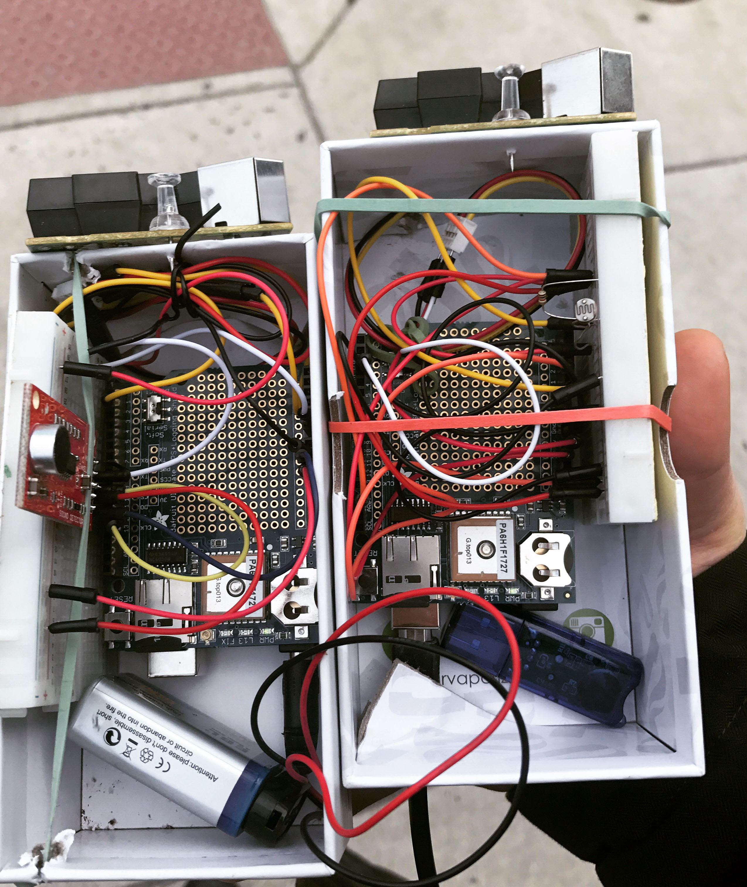

Welcome to Landscape of Senses project page, where I visualize urban sensory data I collected around Philadelphia. It is an ongoing hobby-project that is one part self-quantification and one part my first attempt at measuring the intangible.
By selecting different sensing samples I collected, you can visualize spatially and quantitatively the four variables, some of the building blocks of what I call the sensory landscape:
- air quality,
- ambient light level,
- temperature, and
- diversity index.
The first stage of this project was completed for a joint assignment for Information Design + Visualization and Javascript Programming for Planning courses at PennDesign in spring of 2018.
Start exploring!
- Choose one of the twelve sensing samples above
- Hover over the points on the map to locate the data point on the graphs
If you'd like to find out more about the project,
click here and read on
Welcome Message
The Variables
The first three -- air quality, ambient light level, and temperature -- you likely find reasonable.
The decision to include the diversity index perhaps is a perplexing one. An important part of my process for developing this project was thinking more critically about the urban elements that affect my sense of place. So I broadened and challenged the definition of sensory agents to those that evoke emotional responses and shape how I perceive my surroundings on the streets of the city.
As a student of city planning and community economic development, and of a minority woman myself, there are very few days that the issues of race and diversity is sitting on my mind. From which topics and conversations they stem from varies everyday; but that is the point. They undoubtably make an integral part of what it means to live in the US, and appropriately no part of urban life can be painted without them.
The diversity index dataset I used was a Census block group level data created by PolicyMap, who used US Census data to calculate the probability of two randomly chosen people in a block group to be of different races or ethnicities.
About the device
About the variables
The Device
All sample datasets displayed on this application was collected on the Arduino-run sensing device I built with Adafruit Ultimate GPS Logger Shield, a Shenyei PPD42NS air quality sensor, a photoresistor, and a TMP36 temperature sensor.
Data samples that are available for visualization were collected between March 6th and March 9th of 2018 during trips that were naturally occuring as parts of my days. The device was set up to log the sensing data every 10 seconds.

additional data sources:
diversity index from Census+PolicyMap
(view map or read data description)
data collection, processing + visualization
by alana s kim, 2018